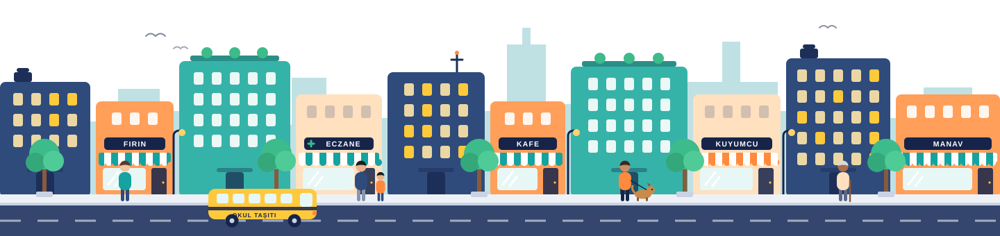

Ataşehir'in mahalle rehberi
Ataşehir'de ne arıyorsun?
Popüler:

Hızlı Keşfet
Mahallede en çok aranan hizmetlere tek dokunuşla ulaş.
- Nöbetçi Eczaneler Bu gece açık olan eczaneler Hemen Göz At
- Özel Okullar Anaokulundan liseye Hemen Göz At
- Kuyumcular Altın, pırlanta, saat Hemen Göz At
- Ustalar & Tesisatçılar Tesisat, elektrik, çilingir Hemen Göz At
- Kafe & Restoranlar Kahvaltı, kahve, akşam yemeği Hemen Göz At
- Kayıp & Yardımlaşma Kayıp dostlar, komşu desteği Hemen Göz At
- Kuru Temizleme Ütü, halı, perde yıkama Hemen Göz At
Ataşehir'de Popüler
Komşuların bu hafta en çok baktığı rehberler.